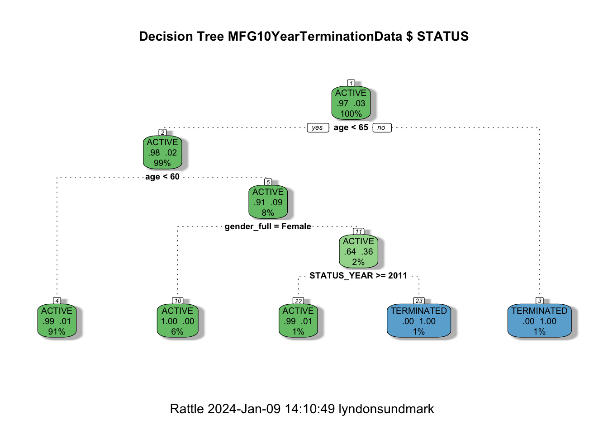
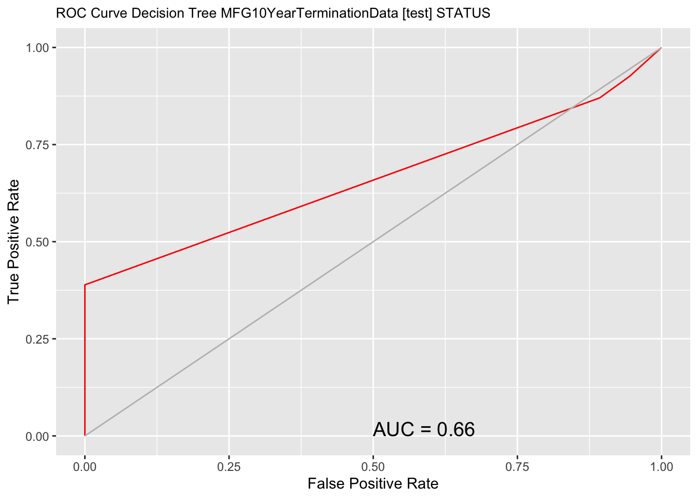
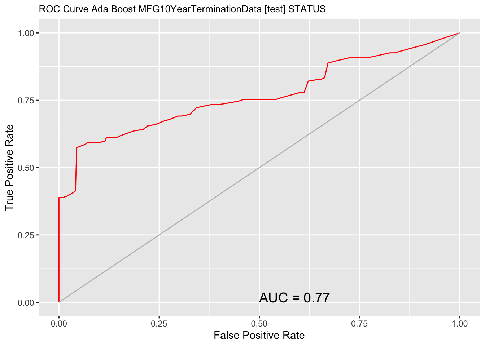
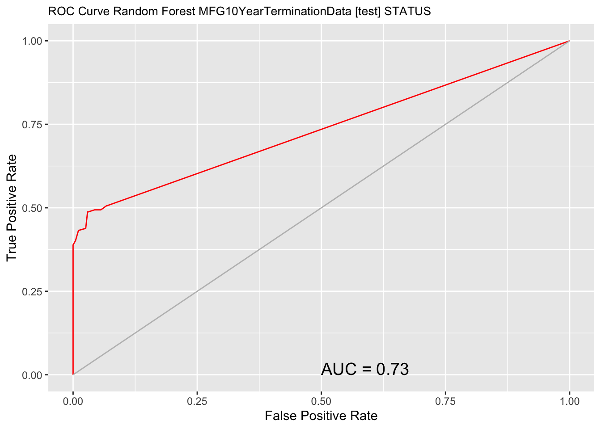
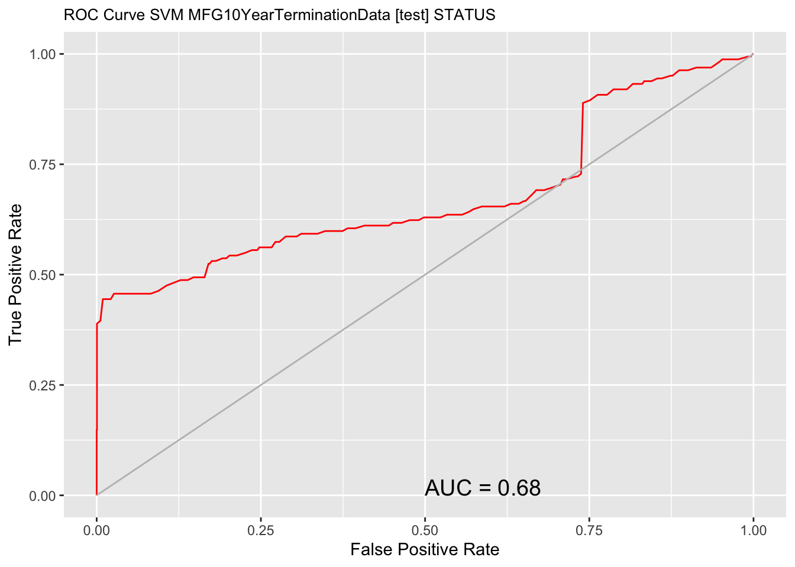
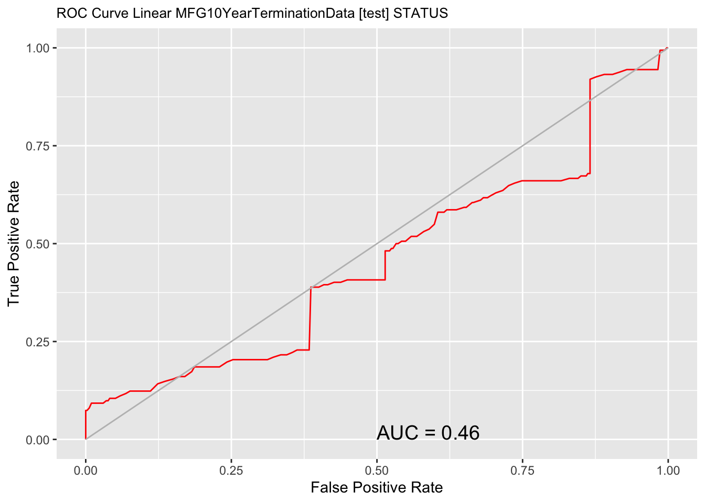

It gave an example of People Analytics being applied to absenteeism data. Lets now take a look at another HR example- this time employee churn. (Once again, the example is intended to be illustrative, not necessarily robust or best practices)
You may be asking what is Employee Churn? In a word -“turnover’- its when employees leave the organization. In another word-”terminates”, whether is be voluntary or involuntary. In the widest sense churn/turnover is concerned both the calculation of rates of people leaving the organization and the individual terminates themselves.
Most of the focus in the past has been on the ‘rates’, not on the individual terminates.We calaculate past rates or turnover in an attempt to predict future turnover rates. And indeed it is important to do that and to continue to do so. Data warehousing tools are very powerful in this regard to slice and dice this data efficiently over different time periods at different levels of granularity. BUT it is only half the picture. These rates only show the impact of churn/turnover in the ‘aggregate’. In addition to this you might be interested in predicting exactly ‘who’ or ‘which employees’ exactly may be at high risk for leaving the organization. Hence the reason for being interested in the ‘individual’ records in addition to the aggegrate.
Statistically speaking, ‘churn’ is ‘churn’ regardless of context. Its when a member of a population leaves a population. One of the examples your will see in Microsoft AzureML and in many data science textbooks out there is ‘customer’ churn. This is from the marketing context. In many businesses such a cell phone companies and others, it is far harder to generate and attract new customers than it is to keep old ones. So businesses want to do what they can to keep existing customers. When they leave, that is ‘customer churn’ for that particular company.
There is applicability of this kind of thinking and mindset to Human Resources in an organization as well. It is far less expensive to ‘keep’ good employees once you have them, then the cost of attracting and training new ones. Hmmmmm- a marketing principle that applies to the management of human resources, and a data science set of algorithms that can help determine whether there are patterns of churn in our data that could help predict future churn.
HR truly needs to start thinking outside of its traditional thinking and methodologies to powerfully address the HR challenges and issues in the future
As I indicated in my previous article (mentioned above)- on a personal level I like to think of People Analytics as when the data science process is applied to HR information. For that reason i would to revisit what that process is and use it as the framework to guide the rest of the example illustrated in this blog article.
The Data Science Process Revisited
Define a goal ,as mentioned above, means identifying first what HR management business problem you are trying to solve. Without a problem/issue we don’t have a goal.
Collect and Manage data. At its simplest, you want a ‘dataset’ of information perceived to be relevant to the problem. The collection and management of data could be a simple extract from the corporate Human Resource Information System, or an output from an elaborate Data Warehousing/Business Intelligence tool used on HR information. For purpose of this blog article illustration we will use a simple CSV file. It also involves exploring the data both for data quality issues, and for an initial look at what the data may be telling you
Build The Model. This step really means, after you have defined the HR business problem or goal you are trying to achieve, you pick a data mining approach/tool that is designed to address that type of problem. With Employee Churn you are trying to predict who might leave as contrasted from those that stay. The business problem/goal determine the appropriate data mining tools to consider. Not exhaustive as a list, but common data mining approaches used in modelling are classification,regression, anomaly detection, time series, clustering, association analyses to name a few. These approaches take information/data as inputs , run them through statistical algorithms, and produce output.
Evaluate and Critique Model. Each data mining approach can have many different statistical algorithms to bring to bear on the data. The evaluation is both what algorithms provide the most consistent accurate predictions on new data, and do we have all the relevant data or do we need more types of data to increase predictive accuracy of model on new data. This can be necessarily repetitive and circular activity over time to improve the model
Present Results And Document. When we have gotten out model to an acceptable ,useful predictive level, we document our activity and present results. The definition of acceptable and useful is really relative to the organization, but in all cases would mean , results show improvement over what would have been otherwise. The principle behind data ‘science’ like any science, is that with the same data, people should be able to reproduce our findings/ results.
Deploy Model. The whole purpose of building the model ( which is on existing data) is to:
use the model on future data when it becomes available, to predict or prevent something from happening before it occurs or
to better understand our existing business problem to tailor more specific responses
Step 1 -Define The Goal
Our hypothetical company found that its previous application of People Analytics- applying the data science process to organizational absenteeism as an issue yielded some valuable insights that are now impacting their decision making in the future on how they will address it.
It now wants to apply these same data science principles and steps to another HR issue- employee churn. It realizes when good people leave, it costs far more to replace them than providing some incentives to keep them. So it would like to be data driven in the HR decisions it makes with respect to employee retention
The following questions are among the ones they would like answered:
What proportion of our staff are leaving?
Where is it occuring?
How does Age and Length of Service affect termination?
What, if anything, else contributes to it?
Can we predict future terminations?
If so, how well can we predict?
Step 2 - Collect And Manage The Data
Often the data to analyze the problem starts with what is currently readily available. After some initial prototyping of predictive models, ideas surface for additional data collection to further refine the model. Since this is first stab at this , the organization uses only what is readily available.
After consulting with their HRIS staff, they found that they have access to the following information:
EmployeeID
Record Date
Birth Date
Original Hire Date
Termination Date (if terminated)
Age
Length of Service
City
Department
Job title
Store Name
Gender
termination reason
termination type (voluntary or involuntary)
Status Year - year of data
Status - ACTIVE or TERMINATED during status year
Business Unit -Stores or Head Office
The company found out that they have 10 years of good data -from 2006 to 2015. It wants to use 2006-2014 as training data and use 2015 as the data to test on. The data consists of
a snapshot of all active employees at the end of each of those years combined with
terminations that occcured during each of those years.
Therefore each year will have records that have either a status of ‘active’ or ‘terminated’. Of the above information items listed, the ‘STATUS’ one is the ‘dependent’ variable- a category to be predicted. Many of others are the independent varibles -‘potential’ predictors.
First Look at The Data- The Structure
Lets load in the data. (By the way, the data below is totally contrived)
# Load an R data frame.library(readr)MFG10YearTerminationData <-read_csv("MFG10YearTerminationData.csv", col_types =cols(gender_full =col_factor(levels =c("Male", "Female")), STATUS =col_factor(levels =c("ACTIVE", "TERMINATED")), BUSINESS_UNIT =col_factor(levels =c("HEADOFFICE", "STORES"))))MYdataset <- MFG10YearTerminationDatastr(MYdataset)
The following objects are masked from 'package:plyr':
arrange, count, desc, failwith, id, mutate, rename, summarise,
summarize
The following objects are masked from 'package:stats':
filter, lag
The following objects are masked from 'package:base':
intersect, setdiff, setequal, union
Second Look at The Data- Data Quality
summary(MYdataset)
EmployeeID recorddate_key birthdate_key orighiredate_key
Min. :1318 Length:49653 Min. :1941-01-15 Min. :1989-08-28
1st Qu.:3360 Class :character 1st Qu.:1958-05-28 1st Qu.:1995-06-02
Median :5031 Mode :character Median :1968-12-04 Median :2000-03-31
Mean :4859 Mean :1969-01-09 Mean :2000-09-04
3rd Qu.:6335 3rd Qu.:1979-07-18 3rd Qu.:2005-10-13
Max. :8336 Max. :1994-12-31 Max. :2013-12-11
terminationdate_key age length_of_service city_name
Min. :1900-01-01 Min. :19.00 Min. : 0.00 Length:49653
1st Qu.:1900-01-01 1st Qu.:31.00 1st Qu.: 5.00 Class :character
Median :1900-01-01 Median :42.00 Median :10.00 Mode :character
Mean :1916-05-10 Mean :42.08 Mean :10.43
3rd Qu.:1900-01-01 3rd Qu.:53.00 3rd Qu.:15.00
Max. :2015-12-30 Max. :65.00 Max. :26.00
department_name job_title store_name gender_short
Length:49653 Length:49653 Length:49653 Length:49653
Class :character Class :character Class :character Class :character
Mode :character Mode :character Mode :character Mode :character
gender_full termreason_desc termtype_desc STATUS_YEAR
Male :23755 Length:49653 Length:49653 Min. :2006
Female:25898 Class :character Class :character 1st Qu.:2008
Mode :character Mode :character Median :2011
Mean :2011
3rd Qu.:2013
Max. :2015
STATUS BUSINESS_UNIT
ACTIVE :48168 HEADOFFICE: 585
TERMINATED: 1485 STORES :49068
A cursory look at the above summary doesnt have anything jump out as being data quality issues.
Third Look at the Data - Generally What Is The Data Telling Us?
Earlier we had indicated that we had both active records at end of year and terminates during the year for each of 10 years going from 2006 to 2015. To have a population to model from (to differentiate ACTIVES from TERMINATES) we have to include both status types .
Its useful then to get a baseline of what percent/proportion the terminates are of the entire population. It also answers our first question. Let’s look at that next.
Warning: The dot-dot notation (`..count..`) was deprecated in ggplot2 3.4.0.
ℹ Please use `after_stat(count)` instead.
It looks like terminates is the last 10 years have predominantly occurred in the STORES business unit. Only 1 terminate in HR Technology which is in the head office.
Lets explore just the terminates for a few moments.
Just Terminates By Termination Type And Status Year
When we look at the terminate by Department, a few thing stick out. Customer Service has a much larger proportion of resignation compared to other departments. And retirement in general is high is a number of departments.
How does Age and Length of Service affect termination?
Density plots show some interesting things. For terminates there is some elevation from 20 to 30 and a spike at 60. For length of service there are 5 spikes. One around 1 year, another one around 5 years, and a big one around 15 year, and a couple at 20 and 25 years.
Boxplots show high average age for terminates as compared to active. Length of service shows not much difference between active and terminated.
That’s a brief general look at some of what the data is telling us. Our next step of course is model building.
Step 3 - Build The Model
Similar to the last blog article, it should be mentioned again that for building models, we never want to use all our data to build the model. This can lead to overfitting- where it might be able to predict well on current data that it sees as is built on, but may not predict well on data that it hasnt seen.
We have 10 years of historical data. we will use the first 9 to train the model, and the 10th year to test it. Moreover, we will use 10 fold cross validation on the training data as well. So before we actually try out a variety of modelling algorithms, we need to partition the data into training and testing datasets.
Let’s Partition The Data
library(rattle)
Loading required package: tibble
Loading required package: bitops
Rattle: A free graphical interface for data science with R.
Version 5.5.1 Copyright (c) 2006-2021 Togaware Pty Ltd.
Type 'rattle()' to shake, rattle, and roll your data.
library(magrittr) # For the %>% and %<>% operators.building <-TRUEscoring <-! building# A pre-defined value is used to reset the random seed so that results are repeatable.crv$seed <-42# Load an R data frame.library(readr)MFG10YearTerminationData <-read_csv("MFG10YearTerminationData.csv", col_types =cols(gender_full =col_factor(levels =c("Male", "Female")), STATUS =col_factor(levels =c("ACTIVE", "TERMINATED")), BUSINESS_UNIT =col_factor(levels =c("HEADOFFICE", "STORES"))))MYdataset <- MFG10YearTerminationData#Create training and testing datasets#Create training and testing datasetsset.seed(crv$seed) MYnobs <-nrow(MYdataset) # 52692 observations MYsample <- MYtrain <-subset(MYdataset,STATUS_YEAR<=2014)MYvalidate <-NULLMYtest <-subset(MYdataset,STATUS_YEAR==2015)# The following variable selections have been noted.MYinput <-c("age", "length_of_service", "gender_full","STATUS_YEAR", "BUSINESS_UNIT")MYnumeric <-c("age", "length_of_service", "STATUS_YEAR")MYcategoric <-c( "gender_full", "BUSINESS_UNIT")MYtarget <-"STATUS"MYrisk <-NULLMYident <-"EmployeeID"MYignore <-c("recorddate_key", "birthdate_key", "orighiredate_key", "terminationdate_key", "city_name", "gender_short", "termreason_desc", "termtype_desc","department_name","job_title", "store_name")MYweights <-NULLMYTrainingData<-MYtrain[c(MYinput, MYtarget)]MYTestingData<-MYtest[c(MYinput, MYtarget)]
Choosing and Running Models
One of the things that characterizes R, is that the number of functions and procedures that can be used are huge. So there often many ways of doing things. Two of the best R packages designed to be used for data science are caret and rattle.
We introduced caret in the last blog article. In this one I will use rattle. What is noteworthy about rattle is that it provides a GUI front end and generates the code for it in the log on the backend. So you can generate models quickly.
I wont be illustrating how to use rattle in this article as a GUI, but rather show the code it generated along with the statistical results and graphs. Please dont get hung up/turned off by the code presented. The GUI front end generated all the code below. I simply made cosmetic changes to it. Please do concentrate on the flow of the data science process in the article as one example of how it can be done.. As a GUI rattle was able to generate all the below output in about 15 minutes of my effort. One tutorial on the rattle GUI cam be found here:
We should step back for a moment and review what are doing here, and what are opening questions were. We are wanting to predict who might terminate in the future. That is a ‘binary result’ or ‘category’. A person is either ‘ACTIVE’ or ‘TERMINATED’. __Since it is a category to be predicted we will choose among models/algorithms that can predict categories._
The models we will look at in rattle are:
Decision Trees (rpart)
Boosted Models (adaboost)
Random Forests (rf)
Support Vactor Models (svm)
Linear Models (glm)
Decision Tree
Lets first u take a look at a decision tree model. This is always useful because with these, you can get a visual tree model to get some idea of how the prediction occurs in an easy to understand way.
library(rattle)library(rpart, quietly=TRUE)# Reset the random number seed to obtain the same results each time.set.seed(crv$seed)# Build the Decision Tree model.MYrpart <-rpart(STATUS ~ .,data=MYtrain[, c(MYinput, MYtarget)],method="class",parms=list(split="information"),control=rpart.control(usesurrogate=0, maxsurrogate=0))# Generate a textual view of the Decision Tree model.#print(MYrpart)#printcp(MYrpart)#cat("\n")# Time taken: 0.63 secs#============================================================# Rattle timestamp: 2016-03-25 09:45:25 x86_64-w64-mingw32 # Plot the resulting Decision Tree. # We use the rpart.plot package.fancyRpartPlot(MYrpart, main="Decision Tree MFG10YearTerminationData $ STATUS")

We can now answer our next guestion from above:
What, if anything, else contributes to it?
From even the graphical tree output it looks like gender, and status year also affect it.
Random Forests
Now for Random Forests
#============================================================# Rattle timestamp: 2016-03-25 18:21:29 x86_64-w64-mingw32 # Random Forest # The 'randomForest' package provides the 'randomForest' function.library(randomForest, quietly=TRUE)
randomForest 4.7-1.1
Type rfNews() to see new features/changes/bug fixes.
Attaching package: 'randomForest'
The following object is masked from 'package:rattle':
importance
The following object is masked from 'package:ggplot2':
margin
The following object is masked from 'package:dplyr':
combine
# Build the Random Forest model.set.seed(crv$seed)MYrf <- randomForest::randomForest(STATUS ~ .,data=MYtrain[c(MYinput, MYtarget)],ntree=500,mtry=2,importance=TRUE,na.action=randomForest::na.roughfix,replace=FALSE)# Generate textual output of 'Random Forest' model.MYrf
Call:
randomForest(formula = STATUS ~ ., data = MYtrain[c(MYinput, MYtarget)], ntree = 500, mtry = 2, importance = TRUE, replace = FALSE, na.action = randomForest::na.roughfix)
Type of random forest: classification
Number of trees: 500
No. of variables tried at each split: 2
OOB estimate of error rate: 1.13%
Confusion matrix:
ACTIVE TERMINATED class.error
ACTIVE 43366 3 6.917383e-05
TERMINATED 501 822 3.786848e-01
# The `pROC' package implements various AUC functions.# Calculate the Area Under the Curve (AUC).pROC::roc(MYrf$y, as.numeric(MYrf$predicted))
Setting levels: control = ACTIVE, case = TERMINATED
Setting direction: controls < cases
Call:
roc.default(response = MYrf$y, predictor = as.numeric(MYrf$predicted))
Data: as.numeric(MYrf$predicted) in 43369 controls (MYrf$y ACTIVE) < 1323 cases (MYrf$y TERMINATED).
Area under the curve: 0.8106
# Calculate the AUC Confidence Interval.pROC::ci.auc(MYrf$y, as.numeric(MYrf$predicted))
Setting levels: control = ACTIVE, case = TERMINATED
Setting direction: controls < cases
95% CI: 0.7975-0.8237 (DeLong)
# List the importance of the variables.rn <-round(randomForest::importance(MYrf), 2)rn[order(rn[,3], decreasing=TRUE),]
#============================================================# Rattle timestamp: 2016-03-25 18:22:22 x86_64-w64-mingw32 # Ada Boost # The `ada' package implements the boost algorithm.# Build the Ada Boost model.set.seed(crv$seed)MYada <- ada::ada(STATUS ~ .,data=MYtrain[c(MYinput, MYtarget)],control=rpart::rpart.control(maxdepth=30,cp=0.010000,minsplit=20,xval=10),iter=50)# Print the results of the modelling.print(MYada)
Call:
ada(STATUS ~ ., data = MYtrain[c(MYinput, MYtarget)], control = rpart::rpart.control(maxdepth = 30,
cp = 0.01, minsplit = 20, xval = 10), iter = 50)
Loss: exponential Method: discrete Iteration: 50
Final Confusion Matrix for Data:
Final Prediction
True value ACTIVE TERMINATED
ACTIVE 43366 3
TERMINATED 501 822
Train Error: 0.011
Out-Of-Bag Error: 0.011 iteration= 6
Additional Estimates of number of iterations:
train.err1 train.kap1
1 1
round(MYada$model$errs[MYada$iter,], 2)
train.err train.kap
0.01 0.24
cat('Variables actually used in tree construction:\n')
age STATUS_YEAR length_of_service gender_full
45 40 39 25
Support Vector Machines
Now lets look at Support Vector Machines
#============================================================# Rattle timestamp: 2016-03-25 18:22:56 x86_64-w64-mingw32 # Support vector machine. # The 'kernlab' package provides the 'ksvm' function.library(kernlab, quietly=TRUE)
Attaching package: 'kernlab'
The following object is masked from 'package:ggplot2':
alpha
# Build a Support Vector Machine model.set.seed(crv$seed)MYksvm <-ksvm(as.factor(STATUS) ~ .,data=MYtrain[c(MYinput, MYtarget)],kernel="rbfdot",prob.model=TRUE)# Generate a textual view of the SVM model.MYksvm
Support Vector Machine object of class "ksvm"
SV type: C-svc (classification)
parameter : cost C = 1
Gaussian Radial Basis kernel function.
Hyperparameter : sigma = 0.370016942069632
Number of Support Vectors : 2425
Objective Function Value : -1999.052
Training error : 0.017811
Probability model included.
# Time taken: 42.91 secs
Linear Models
Finally lets look at linear models.
#============================================================# Rattle timestamp: 2016-03-25 18:23:56 x86_64-w64-mingw32 # Regression model # Build a Regression model.MYglm <-glm(STATUS ~ .,data=MYtrain[c(MYinput, MYtarget)],family=binomial(link="logit"))# Generate a textual view of the Linear model.print(summary(MYglm))
Call:
glm(formula = STATUS ~ ., family = binomial(link = "logit"),
data = MYtrain[c(MYinput, MYtarget)])
Deviance Residuals:
Min 1Q Median 3Q Max
-1.3245 -0.2076 -0.1564 -0.1184 3.4080
Coefficients:
Estimate Std. Error z value Pr(>|z|)
(Intercept) -892.99983 33.95417 -26.300 < 2e-16 ***
age 0.21944 0.00438 50.095 < 2e-16 ***
length_of_service -0.43146 0.01086 -39.738 < 2e-16 ***
gender_fullFemale -0.51900 0.06766 -7.671 1.7e-14 ***
STATUS_YEAR 0.44122 0.01687 26.148 < 2e-16 ***
BUSINESS_UNITSTORES -2.73943 0.16616 -16.486 < 2e-16 ***
---
Signif. codes: 0 '***' 0.001 '**' 0.01 '*' 0.05 '.' 0.1 ' ' 1
(Dispersion parameter for binomial family taken to be 1)
Null deviance: 11920.1 on 44691 degrees of freedom
Residual deviance: 9053.3 on 44686 degrees of freedom
AIC: 9065.3
Number of Fisher Scoring iterations: 7
These were simply the vanilla running of these models.In evaluating the models we have the means to compare their results on a common basis.
Evaluate Models
In the evaluating models step, we are able to answer our final 2 original questions stated at the beginning:
Can we predict?
In a word ‘yes’.
How Well can we predict?
In two words ‘fairly well’.
When it comes to evaluating models for predicting categories, we are defining accuracy as to how many times did the model predict the actual. So we are interested in a number of things.
The first of these are error martricies. In error matricies, you are cross tabulating the actual results with predicted results. If prediction was ‘perfect’ 100%, every prediction would be the same as actual. (almost never happens). The higher the correct prediction rate and lower the error rate- the better.
Error Matricies
Decision Trees
#============================================================# Rattle timestamp: 2016-03-25 18:50:22 x86_64-w64-mingw32 # Evaluate model performance. # Generate an Error Matrix for the Decision Tree model.# Obtain the response from the Decision Tree model.MYpr <-predict(MYrpart, newdata=MYtest[c(MYinput, MYtarget)], type="class")# Generate the confusion matrix showing counts.table(MYtest[c(MYinput, MYtarget)]$STATUS, MYpr,dnn=c("Actual", "Predicted"))
Predicted
Actual ACTIVE TERMINATED
ACTIVE 4799 0
TERMINATED 99 63
Predicted
Actual ACTIVE TERMINATED Error
ACTIVE 0.97 0.00 0.00
TERMINATED 0.02 0.01 0.61
# Calculate the overall error percentage.cat(100*round(1-sum(diag(per), na.rm=TRUE), 2))
2
# Calculate the averaged class error percentage.cat(100*round(mean(per[,"Error"], na.rm=TRUE), 2))
30
Adaboost
# Generate an Error Matrix for the Ada Boost model.# Obtain the response from the Ada Boost model.MYpr <-predict(MYada, newdata=MYtest[c(MYinput, MYtarget)])# Generate the confusion matrix showing counts.table(MYtest[c(MYinput, MYtarget)]$STATUS, MYpr,dnn=c("Actual", "Predicted"))
Predicted
Actual ACTIVE TERMINATED
ACTIVE 4799 0
TERMINATED 99 63
Predicted
Actual ACTIVE TERMINATED Error
ACTIVE 0.97 0.00 0.00
TERMINATED 0.02 0.01 0.61
# Calculate the overall error percentage.cat(100*round(1-sum(diag(per), na.rm=TRUE), 2))
2
# Calculate the averaged class error percentage.cat(100*round(mean(per[,"Error"], na.rm=TRUE), 2))
30
Random Forest
# Generate an Error Matrix for the Random Forest model.# Obtain the response from the Random Forest model.MYpr <-predict(MYrf, newdata=na.omit(MYtest[c(MYinput, MYtarget)]))# Generate the confusion matrix showing counts.table(na.omit(MYtest[c(MYinput, MYtarget)])$STATUS, MYpr,dnn=c("Actual", "Predicted"))
Predicted
Actual ACTIVE TERMINATED
ACTIVE 4799 0
TERMINATED 99 63
Predicted
Actual ACTIVE TERMINATED Error
ACTIVE 0.97 0.00 0.00
TERMINATED 0.02 0.01 0.61
# Calculate the overall error percentage.cat(100*round(1-sum(diag(per), na.rm=TRUE), 2))
2
# Calculate the averaged class error percentage.cat(100*round(mean(per[,"Error"], na.rm=TRUE), 2))
30
Support Vector Model
# Generate an Error Matrix for the SVM model.# Obtain the response from the SVM model.MYpr <- kernlab::predict(MYksvm, newdata=na.omit(MYtest[c(MYinput, MYtarget)]))# Generate the confusion matrix showing counts.table(na.omit(MYtest[c(MYinput, MYtarget)])$STATUS, MYpr,dnn=c("Actual", "Predicted"))
Predicted
Actual ACTIVE TERMINATED
ACTIVE 4799 0
TERMINATED 150 12
Predicted
Actual ACTIVE TERMINATED Error
ACTIVE 0.97 0 0.00
TERMINATED 0.03 0 0.93
# Calculate the overall error percentage.cat(100*round(1-sum(diag(per), na.rm=TRUE), 2))
3
# Calculate the averaged class error percentage.cat(100*round(mean(per[,"Error"], na.rm=TRUE), 2))
47
Linear Model
# Generate an Error Matrix for the Linear model.# Obtain the response from the Linear model.MYpr <-as.vector(ifelse(predict(MYglm, type="response", newdata=MYtest[c(MYinput, MYtarget)]) >0.5, "TERMINATED", "ACTIVE"))# Generate the confusion matrix showing counts.table(MYtest[c(MYinput, MYtarget)]$STATUS, MYpr,dnn=c("Actual", "Predicted"))
Predicted
Actual ACTIVE
ACTIVE 4799
TERMINATED 162
Predicted
Actual ACTIVE Error
ACTIVE 0.97 0
TERMINATED 0.03 1
# Calculate the overall error percentage.cat(100*round(1-sum(diag(per), na.rm=TRUE), 2))
-97
# Calculate the averaged class error percentage.cat(100*round(mean(per[,"Error"], na.rm=TRUE), 2))
50
Well that was interesting!
Summarizing the confusion matrix showed that decision trees,random forests, and adaboost all predicted similarly. BUT Support Vector Machines and the Linear Models did worse for this data.
###Area Under Curve (AUC)
Another way to evaluate the models is the AUC. The higher the AUC the better. The code below generates the information necessary to produce the graphs.
#============================================================# Rattle timestamp: 2016-03-25 19:44:22 x86_64-w64-mingw32 # Evaluate model performance. # ROC Curve: requires the ROCR package.library(ROCR)# ROC Curve: requires the ggplot2 package.library(ggplot2, quietly=TRUE)# Generate an ROC Curve for the rpart model on MFG10YearTerminationData [test].MYpr <-predict(MYrpart, newdata=MYtest[c(MYinput, MYtarget)])[,2]# Remove observations with missing target.no.miss <-na.omit(MYtest[c(MYinput, MYtarget)]$STATUS)miss.list <-attr(no.miss, "na.action")attributes(no.miss) <-NULLif (length(miss.list)){ pred <-prediction(MYpr[-miss.list], no.miss)} else{ pred <-prediction(MYpr, no.miss)}pe <-performance(pred, "tpr", "fpr")au <-performance(pred, "auc")@y.values[[1]]pd <-data.frame(fpr=unlist(pe@x.values), tpr=unlist(pe@y.values))p <-ggplot(pd, aes(x=fpr, y=tpr))p <- p +geom_line(colour="red")p <- p +xlab("False Positive Rate") +ylab("True Positive Rate")p <- p +ggtitle("ROC Curve Decision Tree MFG10YearTerminationData [test] STATUS")p <- p +theme(plot.title=element_text(size=10))p <- p +geom_line(data=data.frame(), aes(x=c(0,1), y=c(0,1)), colour="grey")p <- p +annotate("text", x=0.50, y=0.00, hjust=0, vjust=0, size=5,label=paste("AUC =", round(au, 2)))print(p)

# Calculate the area under the curve for the plot.# Remove observations with missing target.no.miss <-na.omit(MYtest[c(MYinput, MYtarget)]$STATUS)miss.list <-attr(no.miss, "na.action")attributes(no.miss) <-NULLif (length(miss.list)){ pred <-prediction(MYpr[-miss.list], no.miss)} else{ pred <-prediction(MYpr, no.miss)}performance(pred, "auc")
A performance instance
'Area under the ROC curve'
# ROC Curve: requires the ROCR package.library(ROCR)# ROC Curve: requires the ggplot2 package.library(ggplot2, quietly=TRUE)# Generate an ROC Curve for the ada model on MFG10YearTerminationData [test].MYpr <-predict(MYada, newdata=MYtest[c(MYinput, MYtarget)], type="prob")[,2]# Remove observations with missing target.no.miss <-na.omit(MYtest[c(MYinput, MYtarget)]$STATUS)miss.list <-attr(no.miss, "na.action")attributes(no.miss) <-NULLif (length(miss.list)){ pred <-prediction(MYpr[-miss.list], no.miss)} else{ pred <-prediction(MYpr, no.miss)}pe <-performance(pred, "tpr", "fpr")au <-performance(pred, "auc")@y.values[[1]]pd <-data.frame(fpr=unlist(pe@x.values), tpr=unlist(pe@y.values))p <-ggplot(pd, aes(x=fpr, y=tpr))p <- p +geom_line(colour="red")p <- p +xlab("False Positive Rate") +ylab("True Positive Rate")p <- p +ggtitle("ROC Curve Ada Boost MFG10YearTerminationData [test] STATUS")p <- p +theme(plot.title=element_text(size=10))p <- p +geom_line(data=data.frame(), aes(x=c(0,1), y=c(0,1)), colour="grey")p <- p +annotate("text", x=0.50, y=0.00, hjust=0, vjust=0, size=5,label=paste("AUC =", round(au, 2)))print(p)

# Calculate the area under the curve for the plot.# Remove observations with missing target.no.miss <-na.omit(MYtest[c(MYinput, MYtarget)]$STATUS)miss.list <-attr(no.miss, "na.action")attributes(no.miss) <-NULLif (length(miss.list)){ pred <-prediction(MYpr[-miss.list], no.miss)} else{ pred <-prediction(MYpr, no.miss)}performance(pred, "auc")
A performance instance
'Area under the ROC curve'
# ROC Curve: requires the ROCR package.library(ROCR)# ROC Curve: requires the ggplot2 package.library(ggplot2, quietly=TRUE)# Generate an ROC Curve for the rf model on MFG10YearTerminationData [test].MYpr <-predict(MYrf, newdata=na.omit(MYtest[c(MYinput, MYtarget)]), type="prob")[,2]# Remove observations with missing target.no.miss <-na.omit(na.omit(MYtest[c(MYinput, MYtarget)])$STATUS)miss.list <-attr(no.miss, "na.action")attributes(no.miss) <-NULLif (length(miss.list)){ pred <-prediction(MYpr[-miss.list], no.miss)} else{ pred <-prediction(MYpr, no.miss)}pe <-performance(pred, "tpr", "fpr")au <-performance(pred, "auc")@y.values[[1]]pd <-data.frame(fpr=unlist(pe@x.values), tpr=unlist(pe@y.values))p <-ggplot(pd, aes(x=fpr, y=tpr))p <- p +geom_line(colour="red")p <- p +xlab("False Positive Rate") +ylab("True Positive Rate")p <- p +ggtitle("ROC Curve Random Forest MFG10YearTerminationData [test] STATUS")p <- p +theme(plot.title=element_text(size=10))p <- p +geom_line(data=data.frame(), aes(x=c(0,1), y=c(0,1)), colour="grey")p <- p +annotate("text", x=0.50, y=0.00, hjust=0, vjust=0, size=5,label=paste("AUC =", round(au, 2)))print(p)

# Calculate the area under the curve for the plot.# Remove observations with missing target.no.miss <-na.omit(na.omit(MYtest[c(MYinput, MYtarget)])$STATUS)miss.list <-attr(no.miss, "na.action")attributes(no.miss) <-NULLif (length(miss.list)){ pred <-prediction(MYpr[-miss.list], no.miss)} else{ pred <-prediction(MYpr, no.miss)}performance(pred, "auc")
A performance instance
'Area under the ROC curve'
# ROC Curve: requires the ROCR package.library(ROCR)# ROC Curve: requires the ggplot2 package.library(ggplot2, quietly=TRUE)# Generate an ROC Curve for the ksvm model on MFG10YearTerminationData [test].MYpr <- kernlab::predict(MYksvm, newdata=na.omit(MYtest[c(MYinput, MYtarget)]), type="probabilities")[,2]# Remove observations with missing target.no.miss <-na.omit(na.omit(MYtest[c(MYinput, MYtarget)])$STATUS)miss.list <-attr(no.miss, "na.action")attributes(no.miss) <-NULLif (length(miss.list)){ pred <-prediction(MYpr[-miss.list], no.miss)} else{ pred <-prediction(MYpr, no.miss)}pe <-performance(pred, "tpr", "fpr")au <-performance(pred, "auc")@y.values[[1]]pd <-data.frame(fpr=unlist(pe@x.values), tpr=unlist(pe@y.values))p <-ggplot(pd, aes(x=fpr, y=tpr))p <- p +geom_line(colour="red")p <- p +xlab("False Positive Rate") +ylab("True Positive Rate")p <- p +ggtitle("ROC Curve SVM MFG10YearTerminationData [test] STATUS")p <- p +theme(plot.title=element_text(size=10))p <- p +geom_line(data=data.frame(), aes(x=c(0,1), y=c(0,1)), colour="grey")p <- p +annotate("text", x=0.50, y=0.00, hjust=0, vjust=0, size=5,label=paste("AUC =", round(au, 2)))print(p)

# Calculate the area under the curve for the plot.# Remove observations with missing target.no.miss <-na.omit(na.omit(MYtest[c(MYinput, MYtarget)])$STATUS)miss.list <-attr(no.miss, "na.action")attributes(no.miss) <-NULLif (length(miss.list)){ pred <-prediction(MYpr[-miss.list], no.miss)} else{ pred <-prediction(MYpr, no.miss)}performance(pred, "auc")
A performance instance
'Area under the ROC curve'
# ROC Curve: requires the ROCR package.library(ROCR)# ROC Curve: requires the ggplot2 package.library(ggplot2, quietly=TRUE)# Generate an ROC Curve for the glm model on MFG10YearTerminationData [test].MYpr <-predict(MYglm, type="response", newdata=MYtest[c(MYinput, MYtarget)])# Remove observations with missing target.no.miss <-na.omit(MYtest[c(MYinput, MYtarget)]$STATUS)miss.list <-attr(no.miss, "na.action")attributes(no.miss) <-NULLif (length(miss.list)){ pred <-prediction(MYpr[-miss.list], no.miss)} else{ pred <-prediction(MYpr, no.miss)}pe <-performance(pred, "tpr", "fpr")au <-performance(pred, "auc")@y.values[[1]]pd <-data.frame(fpr=unlist(pe@x.values), tpr=unlist(pe@y.values))p <-ggplot(pd, aes(x=fpr, y=tpr))p <- p +geom_line(colour="red")p <- p +xlab("False Positive Rate") +ylab("True Positive Rate")p <- p +ggtitle("ROC Curve Linear MFG10YearTerminationData [test] STATUS")p <- p +theme(plot.title=element_text(size=10))p <- p +geom_line(data=data.frame(), aes(x=c(0,1), y=c(0,1)), colour="grey")p <- p +annotate("text", x=0.50, y=0.00, hjust=0, vjust=0, size=5,label=paste("AUC =", round(au, 2)))print(p)

# Calculate the area under the curve for the plot.# Remove observations with missing target.no.miss <-na.omit(MYtest[c(MYinput, MYtarget)]$STATUS)miss.list <-attr(no.miss, "na.action")attributes(no.miss) <-NULLif (length(miss.list)){ pred <-prediction(MYpr[-miss.list], no.miss)} else{ pred <-prediction(MYpr, no.miss)}performance(pred, "auc")
A performance instance
'Area under the ROC curve'
A couple of things to notice:
It turns out that the adaboost model produces the highest AUC. So we will use it to predict the 2016 terminates in just a little bit.
The Linear model was worst.
Present Results and Document
All the files (code, csv data file, and published formats) for this blog article can be found at the following link:
Similar to the last blog article, the results are presented using the R Markdown language. The blog artile is written in it. It is the rmd file provided in the link. R Markdown allows inline integration of R code,results, and graphs with the textual material of this blor article. And it can be published in Word, HTML, or PDF formats.
If you want to run any of the code for this article you need to download the CSV files and make changes to the path information in the R code to suit where you located the CSV file.
Deploy Model
Lets predict the 2016 Terminates.
In real life you would take a snapshot of data at end of 2015 fof active employees. For purposes of this exercise we will do that but also alter the data to make both age year of service information - 1 year greater for 2016.
#Apply model#Generate 2016 dataEmployees2016<-MYtest #2015 dataActiveEmployees2016<-subset(Employees2016,STATUS=='ACTIVE')ActiveEmployees2016$age<-ActiveEmployees2016$age+1ActiveEmployees2016$length_of_service<-ActiveEmployees2016$length_of_service+1#Predict 2016 Terminates using adaboost#MYada was name we gave to adaboost model earlierActiveEmployees2016$PredictedSTATUS2016<-predict(MYada,ActiveEmployees2016)PredictedTerminatedEmployees2016<-subset(ActiveEmployees2016,PredictedSTATUS2016=='TERMINATED')#show records for first 5 predictionshead(PredictedTerminatedEmployees2016)
to once again demonstrate a People Analytics example Using R
to demonstrate a meaningful example from the HR context
not to be necessarily a best practices example, rather an illustrative one
to motivate the HR Community to make much more extensive use of ‘data driven’ HR decision making.
to encourage those interested in using R in data science to delve more deeply into R’s tools in this area.
From a practical perpsective, if this was real data from a real organization, the onus would be on the organization to make ‘decisions’ about what the data is telling them.